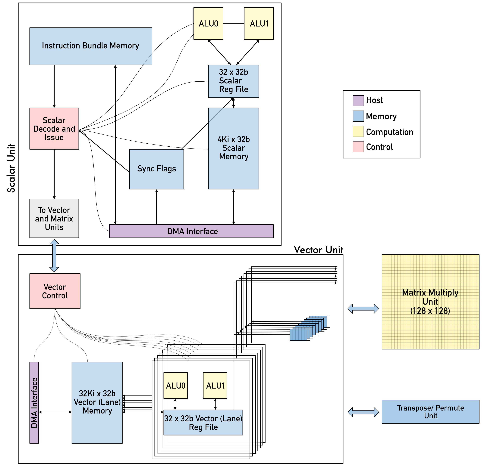

Just my incoherent thoughts on Google’s TPUs.
GPUs originated from the gaming community because a CPU could not handle specialised tasks such as rasterisation, texture mapping, frame buffer operations etc Harris (2005). The deep learning community adopted GPUs and has continued to use them and extend their capabilities(Navarro et al. 2020).
However, further performance gains could not be extracted via the addition of transistors alone. As a more spearheaded approach, TPUs were conceived with the idea(N. Jouppi et al. 2018) that removing graphics capabilities and focusing on matrix multiplication capabilities could lead to better performance and power efficiency.
As is the case with a lot of new advancements, the theoretical component needed to make this leap already existed. Work on systolic matrix multiplication had existed since the 1980s and it was put to use in TPUs.
Three versions of TPUs have been released with v2 and v3 being accessible to the general public via Google Cloud.
Systolic architecture design is a general methodology for mapping high level computations into hardware structures developed at Carnegie Melon University around 1980(Kung 1982).
Systolic architecture gets its name from analogising the human heart, which pumps oxygenated blood throughout the body and receives de-oxygenated blood back from the organs with a computer’s memory, which pumps data throughout the processing units and gets processed data back.
When the number of operations is greater than the total number of I/O elements, the task is said to be “Compute Bound”. In the reverse case, the task is said to be “I/O bound”. As an example, matrix multiplication is a compute bound task while matrix addition is an I/O bound task.(Williams, Waterman, and Patterson 2009)
Systolic architectures have found applications in various mathematical computations (Milovanović et al. 2010) but they can only speed up tasks that are compute bound.
Google’s TPU v1 was put into production in 2015 and it was used internally by Google for their applications. In 2017 Google finally published a technical description of the chip called “In-Datacenter Performance Analysis of a Tensor Processing Unit” (N. P. Jouppi et al. 2017).
TPUv1 was designed as a coprocessor with a PCIe Gen3 x16 bus ( 12GB/s bandwidth). Similar to a GPU, it was designed to work with existing infrastructure and one server could be connected to 4 TPUs. A TPU is more like an FPU (Floating Point Unit) than a GPU because the host sends the instructions to the TPU whereas a GPU fetches the instructions on its own.
The central piece of the TPU is the MMU (Matrix Multiply Unit). This is the component that is based on systolic architectures. It contains 256x256 MAC (multiply and accumulate) units that can perform 8-bit multiplications and additions on signed or unsigned integers. This means that:
\[T = 256*256\ ops * 700MHz\] \[= 45.2 T ops/s\] These are just multiply operations. So, adding the addition operations, \[T = 45.2 * 2 \approx 90 T ops/s\]
The weights for the matrix unit are staged through an on-chip Weight FIFO that reads from an off-chip 8 GB DRAM called Weight Memory (two 2133MHz DDR3 DRAM channels) for inference, weights are read-only. 8 GB supports many simultaneously active models.
The 16-bit products are collected in the 4 MB of 32-bit Accumulators below the matrix unit. The 4MB represents 4096, 256-element, 32-bit accumulators.
The matrix unit produces one 256-element partial sum per clock cycle. When using a mix of 8-bit weights and 16-bit activations (or vice versa), the Matrix Unit computes at half-speed, and it computes at a quarter-speed when both are 16 bits.The intermediate results are held in the 24 MB on-chip Unified Buffer, which can serve as inputs to the Matrix Unit. A programmable DMA controller transfers data to or from CPU Host memory and the Unified Buffer. The 24 MB Unified Buffer is almost a third of the die and the Matrix Multiply Unit is a quarter.(Sato, Young, and Patterson 2017)
The TPU ASIC is built on a 28nm process and consumes 40W when running (75W TDP). TPU implements the matrix multiplication with the systolic array in a pipeline fashion. It relies on data from different directions arriving at cells in an array at regular intervals and being combined.
TPU v2 was unveiled at Google I/O in May 2017, two years later. While TPU v1 is a coprocessor, controlled by the host, TPU v2 and successors are Turing-complete and are suitable for both training and inference. Importantly, TPU v2 was built for multi-chip configurations because it became critical due to heavy production workloads — a single TPU v2 would take 60–400 days for some of them.
A “Cloud TPU” is a TPU board with 4 TPU chips connected through PCI to a host virtual machine.
Each TPU chip contains two cores with 8 GiB of HBM (high-bandwidth memory) and one matrix unit (MXU) for each TPU core. TPU v2 is connected to the host by PCIe Gen3 x32. The MXU provides the bulk of computing power in a TPU chip. Each MXU is capable of performing 16K (128x128) multiply-accumulate operations in each cycle at reduced bfloat16(Wang 2019)(Kalamkar et al. 2019) (BF16) precision. It is supported by a vector processing unit that performs all the other computations in typical training workloads.(Patterson 2018)
Matrix multiplications are performed with BF16 inputs but all accumulations happen in FP32 so the resulting matrix is FP32(Courbariaux, Bengio, and David 2014). All other computations are in FP32 except for results going directly to an MXU input, which are converted to BF16.
The Scalar Unit fetches VLIW(Fisher 1984) (Very Long Instruction Word) instructions from the core’s on-chip, software-managed Instruction Memory (Imem), executes scalar operations using a 4K 32-bit scalar data memory (Smem) and 32 32-bit scalar registers (Sregs), and forwards vector instructions to the Vector Unit. The 322-bit VLIW instruction can launch eight operations: two scalar, two vector ALU, vector load and store, and a pair of slots that queue data to and from the matrix multiply and transpose units. The XLA compiler(PyTorch 2020) schedules loading Imem via independent overlays of code, as unlike conventional CPUs, there is no instruction cache.
The Vector Unit performs vector operations using a large on-chip vector memory (Vmem) with 32K 128 x 32-bit elements (16MB), and 32 2D vector registers (Vregs) each containing 128 x 8 32-bit elements (4 KB). The Vector Unit streams data to and from the MXU through decoupling FIFOs. The Vector Unit collects and distributes data to Vmem via data-level parallelism (2D matrix and vector functional units) and instruction- level parallelism (8 operations per instruction).
The Transpose, Reduction, Permute Unit performs efficient common matrix transformations. ICI enables direct connections between chips (500 GB/s per link) to form a supercomputer using only 13% of each chip. Direct links simplify rack-level deployment, but in a multi-rack system, the racks must be adjacent. TPU v1 was memory bound for most of its applications. Engineers solved its memory bottleneck by using High Bandwidth Memory (HBM) DRAM in TPU v2 with 700 GB/s bandwidth instead of 34 GB/s bandwidth of DDR3 in TPU v1. More on memory speed here. TPU v2 delivers 22.5 TFLOPS per core, so 45 TFLOPS per chip and 180 TFLOPS per Cloud TPU card(Shahid and Mushtaq 2020).

TPU v3 was announced in May 2018 at Google I/O, only a year after the TPU v2. It’s rather a gradual evolution of TPU v2, or maybe “TPU v2 done right” (in one deck Google called it “The Anti-Second System”).
A “Cloud TPU v3” is still a TPU board with 4 TPU chips. Each TPU v3 chip contains two cores with 16 GB of HBM (increased size twice and bandwidth from 700 to 900 GB/s) and two matrix units (MXU) for each TPU core (instead of a single one in TPU v2). Now it is liquid-cooled (so the tubes on the photo).
TPU v3 delivers 420 TFLOPS per Cloud TPU card (due to twice the number of MXU and increased clock rate (940 MHz vs 700 MHz)(Teich 2018).
The main idea is to benchmark individual operations of the TPU. The question then remains what operations should be benchmarked. The operations are divided into 4 categories:
Basic Functions (Add, subtract, multiply, divide, power, sqrt, abs, log, exp)
Activation Functions (ReLU, Leaky ReLU, sign, sigmoid, softplus, relu6, hardswish, mish, log-softmax, tanh)
Matrix Multiplication (dot product, 2-D dot product, 3-D dot product, 4-D dot product, 4-D sum, Matrix Multiplication)
Other Matrix Operations (Scalar multiplication, reverse scalar multiplication, subtract, reverse subtract)
For each operation, a function stress_test is called that first generates a matrix of a randomly selected integer size between size \(2^i\) and \(2^{i+1}\) and \(i\) is increased until the TPU/GPU cannot handle the computation (A GPU throws a CUDA out of memory error while a TPU crashes). The decision to select a random integer that’s not an exact power of 2 is based on the fact that these devices are optimized for sizes that are a power of 2. To get rid of this optimization factor and test raw power, the size is random and not a perfect power of 2.
In order to compare TPUs and GPUs, I needed to rent a GPU in the cloud. However, Google was and still is refusing to grant my request for GPUs. I had to use GPUs available in the cloud and that presented a problem because Google Cloud run on a shared memory architecture. This means that the amount of memory in a system is not fixed. It varies depending on the current load on the system. This is problematic for benchmarking because the conditions cannot be controlled. I’ll update this document if the situation changes.
On GitHub.